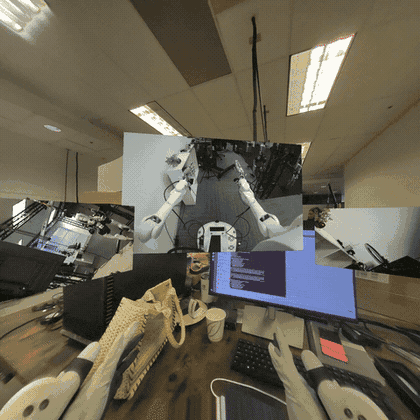
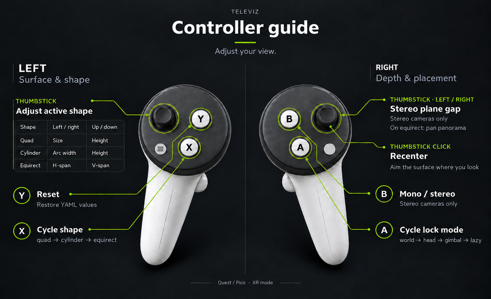

Camera Streaming#
camera_viz is the reference camera-streaming sample built on Televiz (isaaccapture.viz). It captures frames from one or more cameras
and streams them to an XR headset — one plane per camera, aspect-fit — either directly or from a
robot to a workstation over the network (split mode). It can also stream recorded camera
data — a video file replayed in place of a live camera — and render
to a desktop window instead of the headset.
The sample lives at examples/camera_viz/. This page walks you from setup and a camera-free first run to real cameras and the robot → workstation split mode. For the exact command surface and flags, see the README.


camera_viz in XR mode — one plane per camera.#
Requirements#
Required#
GPU host: an Ubuntu workstation meeting the system requirements, or a Jetson with the appropriate JetPack installation: Orin: JetPack 6.2.x or 7.2.1; Thor: JetPack 7.x, including 7.2.1. Every source uses GPU-resident frames through CuPy, including recordings and synthetic patterns. Window mode also requires the NVIDIA GPU.
CUDA development components: the CUDA runtime, NVRTC, and development headers matching the installed CUDA version. CuPy compiles kernels at runtime; a working driver alone is insufficient. For JetPack 7.2.1 / CUDA 13.2, follow Jetson CUDA prerequisites below.
Display: for XR, a supported headset running the CloudXR client, with network access to the GPU host and the CloudXR firewall ports open. Follow 5. Connect an XR headset for headset setup. Alternatively,
--mode windowneeds a local desktop display or a video-capable remote desktop. The viewer starts CloudXR when needed.Sample and dependencies: a repository checkout, Git LFS for the bundled replay clip, and network access for setup and the first CloudXR launch. Setup creates a Python 3.12 environment and installs the sample’s Python dependencies. Have sudo access available if it prompts to install missing system packages.
Optional, recommended hardware#
Camera: recommended for checking the actual live view and capture latency, but optional for the first run. Use a USB / UVC webcam, OAK-D, or supported ZED camera; see Supported sources. Connect it to the viewer host for direct mode, with the camera’s required USB connection, power, device permissions, and SDK. OAK-D and UVC support are installed by default; ZED needs its SDK and
setup --with-zed. A recording or synthetic pattern lets you complete the initial display checks without a camera.XR controllers: optional for viewing, recommended for testing the live placement and display controls in Controller bindings.
Jetson CUDA prerequisites#
On JetPack 7.2.1, use the CUDA 13.2 development components from the matching NVIDIA package repositories. Check the BSP and toolkit before running sample setup:
cat /etc/nv_tegra_release
readlink -f /usr/local/cuda
/usr/local/cuda/bin/nvcc --version
JetPack 7.2.1 reports L4T R39, REVISION: 2.1; the toolkit should report CUDA 13.2.
If the development components are missing, follow NVIDIA’s
JetPack installation instructions for your
BSP. The full nvidia-jetpack package includes them; for just CUDA, NVIDIA documents
nvidia-cuda-dev:
sudo apt update
sudo apt install nvidia-cuda-dev
The runtime-only nvidia-cuda package is insufficient. Check that /usr/local/cuda points
at the intended toolkit before setup: the sample uses it to select cupy-cuda12x or
cupy-cuda13x. On JetPack 6.2.x, keep the matching CUDA 12.x components. The sample’s
--jetson flag handles CUDA library discovery; it does not install the full toolkit or
upgrade JetPack.
Setup#
Clone the repository if you haven’t already (quick start step 1. Check out code base (for examples)), then run the sample’s one-time setup:
examples/camera_viz/camera_viz.sh setup
source examples/camera_viz/.venv/bin/activate
On a Jetson, add --jetson to the setup command. Activating the environment is optional
for camera_viz.sh commands; the wrapper selects the sample’s environment explicitly.
There is no need to install the isaaccapture pip package yourself. setup builds the
sample’s own environment: isaaccapture[cloudxr] — the cloudxr extra is not optional here,
since XR is the default display mode and the viewer launches the runtime itself — plus every
other Python dependency, into .venv/ via uv. It resolves a release matching the checkout’s
major/minor version, falling back to a release candidate and then, after asking, to a source build
of the surrounding checkout (see scripts/_install_deps.sh; --wheel and --build-from-source override
the choice). When required system packages are missing, it prints the exact apt-get line
to approve — declining, or a non-interactive run, aborts.
By default setup provisions the direct-mode path — USB / UVC and OAK-D camera support. Split
mode (RTP) and ZED support are opt-in, since both pull in dependencies the direct path never
needs. Flags trim or extend that:
Flag |
Effect |
|---|---|
|
Skip USB / UVC webcam support ( |
|
Skip OAK-D support ( |
|
Also install the split-mode dependencies: the GStreamer system packages, PyGObject, and the
native NVENC/NVDEC codec build. Required for |
|
Also build + install the ZED SDK’s Python API ( |
|
Split mode only — robot-side install of just the sender’s dependencies. |
|
Enable Jetson CUDA library discovery for direct or split mode. With RTP enabled, also check for the matching NVRTC package. Install CUDA development components first. |
|
Use |
|
Install a locally built |
|
Skip the package index and build |
Using an external virtual environment#
To reuse an existing Python 3.12 environment, pass its path explicitly, from the repository root:
examples/camera_viz/camera_viz.sh setup --venv /absolute/path/to/venv
Add --jetson on Jetson. Setup installs dependencies into that environment and creates a
symlink at examples/camera_viz/.venv. If that path already exists as a real directory,
move it aside before using --venv; setup refuses to replace it. Subsequent run and
loopback commands use this link automatically. Activating another environment, or setting
VIRTUAL_ENV, does not change the wrapper’s choice.
Check CUDA execution#
Setup’s final check verifies imports. Before opening the viewer, run this small GPU operation from the repository root to also check CuPy kernel compilation and execution:
examples/camera_viz/.venv/bin/python - <<'PY'
import cupy as cp
values = cp.arange(4, dtype=cp.float32)
assert cp.asnumpy(values + 1).tolist() == [1.0, 2.0, 3.0, 4.0]
print("CUDA kernel check passed")
PY
Missing NVRTC libraries or CUDA headers here mean the CUDA installation needs attention; see Troubleshooting before continuing.
First run — a recording, no camera required#
The recorded-camera source (type: video) replays a video file through exactly the same
source → layer → Televiz path a live camera uses. It is the supported way to stream recorded
camera data, it needs no extra setup, and it is the quickest end-to-end check. A test clip ships
with the repo, and configs/replay.yaml
already points at it. Fetch the clip with Git LFS if your checkout contains only its pointer:
git lfs pull --include="examples/camera_viz/test_data/recording.mp4"
Keep the default setup’s OpenCV dependency for video replay (do not use --no-v4l2 for this
first run). From the repository root, choose one of these launch commands:
cd examples/camera_viz
./camera_viz.sh run configs/replay.yaml # XR headset (default)
./camera_viz.sh run configs/replay.yaml --mode window # desktop window instead
In XR mode the viewer first brings up the CloudXR runtime (accept the EULA on first launch, or
pass --accept-eula). Open the printed client URL in your headset browser, accept the host’s
certificate, and click Connect, following 5. Connect an XR headset. On Jetson Orin, select
H.264 in the client’s Video Codec setting before connecting.
You should see the terminal report the session and the source coming up:
camera_viz: source=local, mode=xr, xr=True, shapes=quad, 1 layer(s)
[video] opening...
[video] connected
[video] streaming
and the clip looping on a plane in the headset once it connects — or in a desktop window
(mode=window, xr=False) with the --mode window override, which starts no runtime.
First-session checklist#
Use the unmodified replay.yaml for these checks; it starts with one mono plane in lazy
lock mode. For --mode window, check visibility and image quality, then stop and restart;
head tracking, recentering, and XR controller checks require a headset.
Confirm the plane is visible. The clip should play and loop on one plane in front of you. A connected client or a positive frame rate alone does not confirm that the image is visible. For a black plane on Orin, apply the
compositor: televizworkaround in Troubleshooting and restart.Move your head. Make small turns and lean slightly. In the default
lazymode, the plane should stay anchored in the room for small movements while your viewpoint changes.Test lazy recentering. Turn to look well away from the plane (more than 45 degrees) and hold that direction for about a second. The plane should move smoothly back in front of you. The defaults are a 0.5-second delay and a 0.3-second transition; the placement settings below control these values.
Check image quality. Watch while still and while moving your head. Look for freezing, flicker, torn or corrupted regions, and unexpected colors. Replay is mono, so both eyes should see the same source image. To separate a recording problem from the display path, stop the viewer and try
./camera_viz.sh run configs/synthetic.yaml: its color pattern should animate continuously.Try the controllers, if available. Click the right stick to recenter, press
Ato change lock mode, and pressYto restore the YAML settings. Confirm the change appears in the view and status panel.Bonly affects stereo sources, so it has no effect on this mono replay. See Controller bindings for the full bindings.Stop and repeat. Press
Ctrl+Cin the viewer terminal, launch the same command again, and reconnect the client if needed. Confirm the plane is visible and animating again.
If a check fails, use Troubleshooting before adding a real camera or the split-mode network path. For a bug report, include the failing check, config, host / GPU, JetPack and CUDA versions where applicable, client device, and relevant logs.
Replaying your own recording#
Point path at any file OpenCV’s FFmpeg backend reads — mp4 / mkv / webm carrying H.264,
HEVC, AV1, and so on. The file is probed once at startup for its size and frame rate (a missing
or absurd rate falls back to 30 fps); a missing or unreadable file is a configuration error and
fails immediately instead of retrying like a camera would. A complete config:
source: local
cameras:
- name: replay
enabled: true
type: video
path: ../test_data/recording.mp4 # required; relative to this YAML's directory
loop: true # false = hold the last frame at end of file
fps: 0 # 0 = the file's native rate
stereo: false # true = split a side-by-side recording into eyes
# width/height default to the file's native size (per eye when stereo)
display:
mode: xr # or: window
placements:
replay: { lock_mode: lazy, distance: 1.5 }
With source: rtp, width, height, and fps become required — the sender paces its
encode loop at fps and the receiver sizes its decoder from the config — and stereo is
rejected, since the sender needs per-eye streams. A mono recording is otherwise a fine capture
side for split mode and for loopback, which exercises the whole
encode → UDP → decode path with no camera attached.
Supported sources#
The source kind is selected by the type field of each entry in the YAML cameras list:
|
Notes |
|---|---|
|
USB / UVC cameras — anything |
|
OAK-D RGB / LEFT / RIGHT; mono or |
|
ZED 2 / Mini / X One; mono or |
|
Recorded camera data — video-file replay (anything OpenCV’s FFmpeg backend reads). Loops
by default; |
|
Debugging tool — GPU-generated test pattern, no camera or file required. |
Running with a real camera#
Attach the camera to the machine that runs the viewer, keep source: local in the config, and
run with the matching config. First edit its device, resolution, and frame rate to match your
camera. In particular, v4l2.yaml defaults to a ZED Mini’s 2560×720 UVC mode; a regular webcam
needs values it supports (inspect them with v4l2-ctl --list-formats-ext):
./camera_viz.sh run configs/v4l2.yaml # or oakd.yaml / zed.yaml
You should see the same startup lines as above with the camera’s tag ([v4l2],
[oakd], [zed]) and the live feed. Multiple entries in the cameras list render as one
plane each.
Display modes#
XR is the default: each camera renders as its own plane in the headset via the active OpenXR
runtime, and stereo sources (stereo: true) render true side-by-side stereo. Pass
--mode window (or set display.mode: window in the YAML) to render to a desktop window
instead — no headset or runtime needed; stereo shows the left eye.
In XR, how a plane follows the operator’s head is the per-camera lock_mode under
display.placements.<name>:
Mode |
Behavior |
|---|---|
|
Placed once in front of you and stays put. |
|
Follows your head every frame. Head-locked content updates its pose at application
rate, so it trails fast head motion by roughly a frame — expected for any head-locked
OpenXR layer; prefer |
|
Follows your position but not your rotation: the surface stays pointed where you first looked, walks with you, and turning your head looks around it. The natural mode for wide cylinder feeds (a “virtual gimbal”). |
|
World-locked, but re-snaps in front of you when you look away (default). |
Lazy-mode knobs live under placements.<name>: look_away_angle_deg,
reposition_distance, reposition_delay_s, transition_duration_s.
Controller bindings#
In XR the controllers retune the view live, without editing the YAML and restarting. The right hand changes how the feed looks; the left, what surface it is mapped onto:


Bindings at a glance. The table below is the same thing in words.#
Input |
Effect |
|---|---|
Right stick ←/→ |
Stereo plane gap — how far apart the two eyes’ planes sit
( |
Right stick click |
Recenter on your view: an |
|
Cycle the lock mode: |
|
Toggle mono / stereo. Stereo cameras only. |
|
Cycle the shape: |
|
Reset everything to the YAML values. |
Left stick |
Retunes the active shape: |
Changes apply to every camera at once and appear both on the terminal status panel and on a
head-locked panel in the headset that auto-hides shortly after. Neither toggle reallocates:
B sends the left frame to both eyes, and X flips visibility between shapes built at
startup, so the extra shapes cost VRAM (reported at startup) rather than a stall on the press.
The stereo gap is bounded below divergent parallax — a gap wider than your IPD would need the eyes to splay outward — and the headset’s measured IPD sets that ceiling, not the config. The HUD suggests a gap derived from the plane distance and that IPD.
Bindings, rates and limits live under display.controls; see the
README for the full set.
Display surfaces#
By default each camera renders on a flat plane, which suits normal-FOV feeds. Wide-FOV and
panoramic sources look better on a curved surface: set shape per camera under
display.placements.<name>:
Shape |
Behavior |
|---|---|
|
Flat plane. All lock modes apply. |
|
Curved arc facing the operator, so the image stays at a constant viewing distance edge
to edge. |
|
Full 360°×180° sphere around the operator, for equirectangular panorama / VR-video
sources. The middle of the texture points along |
Curved shapes exist only in XR mode — the viewer exits with an error in window mode. Stereo
sources render per-eye textures on the same surface, and stereo_baseline_mm adds a per-eye
pose shift (no effect on the equirect sphere at its default infinite radius).
Surfaces are composited by the OpenXR runtime, which keeps them sharp under head motion and lets
CloudXR stream them efficiently (see
OpenXR composition layers). For flat planes only,
compositor: televiz opts a camera back into Televiz’s built-in compositor. On Jetson Orin
(CloudXR experimental runtime), set compositor: televiz so the plane is not left black; see
Troubleshooting below. On the Televiz 2D API the same switch is
openxr_composition = False (see Jetson Orin, XR).
CloudXR runtime flags#
In XR mode the viewer attaches to the running CloudXR runtime, or starts one if none is serving. Useful flags:
--accept-eula— accept the CloudXR EULA non-interactively (first run only).--cloudxr-device-profile PROFILE—NV_DEVICE_PROFILE(defaultQuest3).--no-host-client— disable serving CloudXR.js athttps://<host>:48322/client/. Only applies when this run starts the service; stop and restart the service to change hosting.
When the viewer starts a CloudXR service with hosting enabled (the default;
--no-host-client disables it), it prints the local /client/ URL. To
inspect or stop an already-running service, activate the example venv (or any
environment with isaaccapture) and run:
python -m isaaccapture.cloudxr.service status
python -m isaaccapture.cloudxr.service stop
Run camera_viz.py --help for the rest (install dir, env-config file, WSS proxy toggle).
Runtime settings themselves are declared in the config rather than exported. The viewer ships
defaults (pose wait off, runtime foveation on), and display.cloudxr overrides them per
deployment — list only what you want to change:
display:
cloudxr:
NV_DEVICE_PROFILE: apple-vision-pro
NV_ENABLE_POSE_WAIT: null # null drops a viewer default
The viewer writes these to a generated --cloudxr-env-config file, which outranks the process
environment — so a value left in your shell (for example after sourcing
~/.cloudxr/run/cloudxr.env, as --no-launch-cloudxr-runtime suggests) cannot silently
override the config, and neither can it override --cloudxr-device-profile. Booleans are
written in the lowercase spelling the runtime’s parser recognises; the launcher-computed keys
(XR_RUNTIME_JSON, NV_CXR_RUNTIME_DIR, NV_CXR_OUTPUT_DIR, XRT_NO_STDIN) are
rejected by name. Passing --cloudxr-env-config yourself takes precedence over the generated
file.
An unknown variable name warns with a suggestion before the runtime launches, and is passed
through regardless — the runtime has more settings than the viewer lists. To confirm what the
runtime resolved, read the settings dump at the top of the newest
~/.cloudxr/logs/cxr_server.*.log.
Split mode — robot → workstation over RTP#
Split mode runs the capture side on the robot (camera_streamer.py) and ships RTP H.264 to
the viewer on the workstation (source: rtp).
Warning
Split mode is not recommended in most cases. It exists for one situation: the cameras are on the robot, but Isaac Teleop runs on a workstation, so the frames must be streamed to where Isaac Teleop is running. That costs a full extra encode/decode hop — NVENC on the robot, UDP, NVDEC on the workstation — so whenever a camera can attach directly to the machine running Isaac Teleop, run direct mode instead. Wired networks only: there is no retransmit or FEC — one lost packet corrupts one frame until the next IDR (default every 5 s).
In split mode every camera entry must pin width, height, and fps in the YAML — the
receiver sizes its decoder from the config, not from the wire.
The workstation needs the RTP dependencies, which setup does not install by default — re-run
it with --with-rtp if you provisioned for direct mode first. The robot side is handled by
deploy, which implies the flag.
Set source: rtp in the config, export the robot/streaming credentials once per shell, then
deploy the sender and run the viewer:
export REMOTE_HOST=10.0.0.5 REMOTE_USER=nvidia
export STREAMING_HOST=10.0.0.42 # workstation IP
./camera_viz.sh deploy configs/v4l2.yaml # full deploy + systemd unit on the robot
./camera_viz.sh run configs/v4l2.yaml # viewer on the workstation
deploy rsyncs the source to the robot, installs sender dependencies, renders a
camera-streamer.service systemd user unit (injecting --host from $STREAMING_HOST
without editing the YAML on disk), and enables it. Operate the running unit with
./camera_viz.sh service-{status,logs,restart}. The sender retries forever across unplug, SDK
errors, and network blips.
Loopback#
Loopback is a testing / debugging aid, not a deployment mode: ./camera_viz.sh loopback
configs/v4l2.yaml runs the sender and viewer together on 127.0.0.1 — the quickest way to
smoke-test the RTP path on one machine. It also works camera-free with a mono type: video
entry (set width / height / fps).
Configuration#
A single YAML drives both capture and visualization. Each entry in the cameras list becomes
its own plane (and, in split mode, its own RTP port). Abbreviated:
source: local | rtp
streaming:
host: 192.168.1.100 # workstation IP (overridden at deploy time)
encoder: auto | native | gstreamer
cameras:
- name: cam
enabled: true
type: v4l2 # v4l2 | oakd | zed | video | synthetic
width: 2560 # video: optional — defaults to the file's size
height: 720 # (required when source: rtp)
fps: 30
stereo: false # zed / video / synthetic — per-eye capture + SBS in XR
path: clip.mp4 # video only — file to replay, relative to this YAML
loop: true # video only — rewind at end of file
rtp:
port: 5000 # left eye when stereo
port_right: 5001 # required when stereo + source: rtp
bitrate_mbps: 15
display:
mode: xr | window # default: xr
window: { width, height }
xr:
near_z: 0.05 # default
far_z: 100.0 # default
system_wait_seconds: -1 # default; wait forever (0 fails fast)
clear_color: [r, g, b, a]
placements:
cam:
lock_mode: lazy # world | head | lazy | gimbal
distance: 1.5
# size: [w_m, h_m]
# stereo_plane_distance_cm: 0 # gap between the eyes' planes
# shape: quad # quad | cylinder | equirect (cylinder/equirect are XR-only)
# equirect_yaw_deg: 0.0 # equirect: heading the middle of the feed points at
# compositor: openxr # openxr (default) | televiz — quads only
# cylinder_radius_m: 2.0
# cylinder_angle_deg: 90
See the configs/ directory for a complete, commented YAML per source kind.
Troubleshooting#
The XR session fails to create — check
~/.cloudxr/logs/cxr_server.*.logand~/.cloudxr/logs/runtime_worker_stderr.log(runtime_stderr.logwithISAACCAPTURE_LOGGING=off) for the startup failure.XR_ERROR_FORM_FACTOR_UNAVAILABLE(-35) means the runtime is up but no headset has clicked CONNECT yet; XR mode waits according todisplay.xr.system_wait_seconds(default-1to wait indefinitely;0fails fast; positive values wait that many seconds; override with--xr-wait). Pass--mode windowto render to a desktop window instead (no runtime involved).No window appears over SSH —
--mode windowneeds a local display; run on the machine you’re sitting at, or use a video-capable remote desktop.“video source: no such file” — relative
path:values resolve against the YAML’s directory (configs/), not the directory you launched from.A source fails asking for CuPy / CUDA — rerun the CUDA execution check above with the sample’s
.venv/bin/python.nvidia-smichecks the driver; its CUDA version does not establish that the matching toolkit, NVRTC, or headers are installed. For missinglibnvrtc.so,cuda_runtime.h, orcuda_fp16.h, check the development components and/usr/local/cudatarget (Jetson CUDA prerequisites on Jetson), then rerun setup with--jetsonon Jetson. Setup selects CuPy for that toolkit’s major version.Setup succeeded but another Python cannot import the dependencies — the wrapper uses
examples/camera_viz/.venv/bin/pythonregardless of the active shell environment. Use that interpreter for diagnostics, or rerunsetup --venv PATHto select your environment.No video on Orin. When the CloudXR runtime runs on Jetson Orin, set Video Codec to H.264 in the CloudXR web client. See 5. Connect an XR headset.
Black camera plane on Orin — with the CloudXR experimental runtime on Orin, the default OpenXR compositor shows the camera plane but leaves its contents black. Under the camera’s
display.placementsentry, setcompositor: televiz(quads only). The same feed displays correctly with this workaround:display: placements: cam: compositor: televiz
Split mode renders nothing — check the sender is up (
./camera_viz.sh service-status),$STREAMING_HOSTwas the workstation’s IP at deploy time, and UDP ports (default 5000+) aren’t firewalled.Not sure which side is stuck? — set
verbose: trueat the top of the YAML for periodic per-source breadcrumbs on both ends.
How it works#
The sample is organized so that capture, transport, and visualization are cleanly separated, with Televiz as the compositor at the end of the chain:
camera_viz/
├── camera_viz.sh — CLI: setup / loopback / run / deploy / service-*
├── camera_viz.py — receiver / viewer (drives a Televiz VizSession)
├── camera_streamer.py — robot-side RTP sender (per-camera supervisor)
├── pipeline/ — source ABC + threaded runner
├── placements/ — XR lock-mode strategies (world / head / lazy / gimbal)
├── sources/ — V4L2 / OAK-D / ZED / video replay / synthetic / rtp_h264
├── transports/ — RTP sender + receiver (native + GStreamer)
├── codec/ — native NVENC / NVDEC pybind module
├── configs/ — one YAML per source kind
├── test_data/ — sample replay clip (Git LFS)
└── scripts/ — installer + systemd unit template
Sources (sources/) implement a common source ABC and hand frames to a threaded runner in pipeline/. Each source produces GPU frames where possible — e.g. the ZED source uses
retrieve_image(MEM.GPU)so BGRA8 stays in VRAM and a CUDA kernel channel-swaps into contiguous RGBA with no host round-trip.The viewer (camera_viz.py) creates a
VizSessionand adds oneQuadLayerper enabled camera, then submits each frame to its layer and callsrender()once per frame. Stereo cameras submit both eyes.Transport (transports/) carries the split mode: an RTP H.264 sender on the robot and a receiver on the workstation, with a native NVENC/NVDEC codec module (codec/) or a GStreamer fallback.
Placement (placements/) holds the XR lock-mode strategies. Placement is application policy — Televiz only renders a layer at whatever pose the app sets each frame.
Next steps#
After the First-session checklist checks pass, choose the next step for your use case:
See a live camera: follow Running with a real camera, then repeat the visibility and image-quality checks with motion in front of the camera. With a stereo source, also check both eyes and the
Bmono / stereo toggle.Tune the view: adjust placement, size, and lock mode using the controller bindings and YAML settings above. Add entries to
camerasfor multiple feeds, or use First run — a recording, no camera required to replay your own recording.Stream from a robot: use Split mode — robot → workstation over RTP when capture and viewing run on different machines, after validating direct mode locally.
Integrate camera views into teleoperation: follow Sharing the XR session to share Televiz’s OpenXR session with Teleop Session, and use the retargeting interface to map tracking inputs to robot actions. The camera viewer itself does not command a robot.